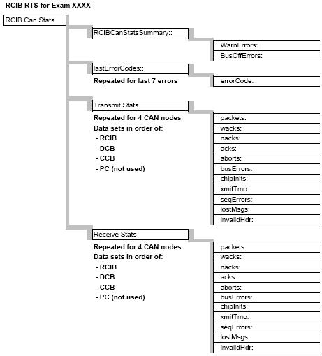

GEMS Proprietary Class: A
Direction 5117807-800, Rev# A
GEMS Proprietary Class: A |
This document defines the available Real Time Statistics (RTS) data available on the system for the RCIB communication subsystem. The RTS data is sent by the ORP to the TGP and then to the host at the end of each exam.
The RTS viewer for the RCIB Stats shows a listing of information related to the RCIB communication subsystem. See Illustration 1 for a pictorial view of the data to help in understanding the information seen.
Illustration 1: Pictorial view of RTS data

Table 1: RTS Data
| RTS (Real Time Statistics) Name | Data Example | Unit | Range | Explanation |
|---|---|---|---|---|
| Date: Wed Apr 7 08:12:51 2004 | Time/Date stamp for this data | |||
| ENDEXAM: ID 801 | exam this data is associated with | |||
| rcibCanStatsSummary:: | CAN communications statistics | |||
| WarnErrors: | 0 | number | NA | General CAN bus warning level errors. |
| BusOffErrors: | 0 | number | NA | |
| lastErrorCodes:: | This section contains the last 7 errors from the CAN chip during the exam. Error number given is CAN chip specific and not useful in the field. Only use as indication that an error occurred. | |||
| errorCode: | 0 | number | NA | |
| Repeats a total of 7 times to give the last 7 errors from the CAN chip. | ||||
| XmitStats:: | Transmit stats Header. There are 4 sets of Transmit stats. Each group is for a different CAN node and they are in order: RCIB, DCB, CCB, PC (not used). | |||
| packets: | 0 | number | NA | Data Packets sent |
| wacks: | 0 | number | NA | |
| nacks: | 0 | number | NA | number of times an acknowledgement is not received. |
| acks: | 0 | number | NA | Acknowledgement of packets sent, should equal packets |
| aborts: | 0 | number | NA | Number of aborted attempts. |
| busErrors: | 0 | number | NA | Number of CAN bus errors. |
| chipInits: | 0 | number | NA | CAN bus chip initializations |
| xmitTmo: | 0 | number | NA | Transmit Time outs |
| seqErrors: | 0 | number | NA | Sequence errors, data packets out of order. |
| lostMsgs: | 0 | number | NA | lost packets |
| invalidHdr: | 0 | number | NA | invalid header transmitted |
| Xmit Stats repeated 3 more times. | ||||
| RcvStats:: | ||||
| packets: | 45793 | number | NA | Data packets received. |
| wacks: | 1 | number | NA | |
| nacks: | 0 | number | NA | number of times an acknowledgement is not received. |
| acks: | 45793 | number | NA | Acknowledgement of packets received, should equal packets |
| aborts: | 0 | number | NA | Number of aborted attempts. |
| busErrors: | 0 | number | NA | Number of CAN bus errors. |
| chipInits: | 0 | number | NA | CAN bus chip initializations |
| xmitTmo: | 0 | number | NA | Transmit Time outs |
| seqErrors: | 0 | number | NA | Sequence errors, data packets out of order. |
| lostMsgs: | 0 | number | NA | lost packets |
| invalidHdr: | 0 | number | NA | invalid header transmitted |
| RcvStats repeated 3 more times. |